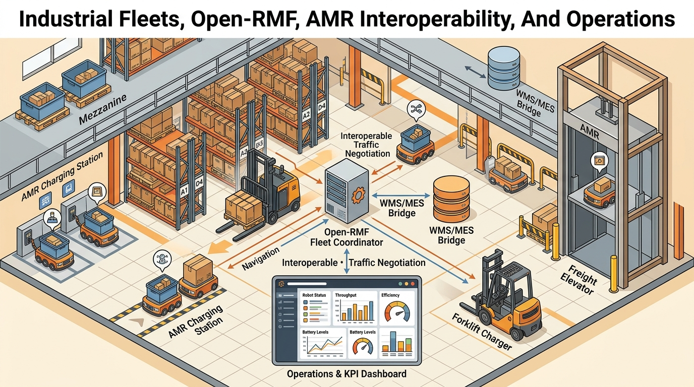

For Industrial Fleets, Open-RMF, AMR Interoperability, And Operations, field deployment evidence must include motors, logs, limits, monitors, and the consequence of each intervention.
A Systems-Minded Embodied AI Agent
At 07:42 on a Tuesday morning, four dock-door AMRs (Autonomous Mobile Robots) in a distribution center stop moving. Each robot reports "waiting for clearance." Throughput drops 26% before any operator alert fires. The culprit is not navigation: a forklift held a charger bay because the MES (Manufacturing Execution System) task-completion signal arrived four minutes late over the WMS (Warehouse Management System) bridge. No single robot log shows it. Only a fleet-level replay artifact, tying charger-allocation timestamps to MES acknowledgment delays, reveals the root cause. Warehouse robotics is now the fastest-scaling segment of embodied AI deployment, and the decisive engineering challenge is systemic: maps, missions, chargers, safety zones, and WMS events must form one auditable architecture. Here you will build that architecture, instrument it with Open-RMF and the MassRobotics AMR Interoperability Standard, and learn to read the evidence that separates a publishable demo from a system that ships.

This section assumes familiarity with multi-robot coordination and fleet task allocation from section 49.3, and with safety monitoring and incident evidence from section 54.6. The fleet evidence loop introduced here is extended in Chapter 56, where persistent robot memory across missions adds a temporal dimension to the same state-action-log contract.
Why This Section Was Added
Figure 55.6.1 gives the field-facing mental model that orients the rest of this section, tracing how sensing, state, planning, control, safety, and evidence logging connect into one fleet architecture. This application layer closes the gap between textbook breadth and the daily needs of researchers and builders. In industrial fleet robotics, the core question is not whether one component scores well in isolation. The question is whether the system produces an action, a safety boundary, and an evidence artifact that another team can inspect.
The central contract is compact: define the operating domain, name the state variables, state the action interface, identify the safety monitor, and save the log that proves what happened. This is called the fleet evidence contract, and every serious embodied system eventually converges on it. A fleet that cannot produce its evidence contract on demand is not a deployed system; it is a field experiment without a witness. Every serious embodied system eventually becomes this contract, whether it is a drone, an autonomous vehicle, a humanoid, a mobile manipulator, an industrial fleet, or a simulator-first research platform.
Choose the model after the evidence contract is clear. A stronger model cannot rescue missing calibration, unclear frames, unbounded actions, stale maps, or metrics computed on incompatible scenario panels.
Technical Core
For this section, the working mathematical object is:
$$KPI=(\text{throughput},\text{uptime},\text{interventions},\text{safety events},\text{SLA}).$$
The notation is a system contract, not a single loss function. It ties the learned or planned output to state, action, environment constraints, and measured evidence. A practitioner can deploy a diffusion-policy controller on MiR250 AMRs, or run a transformer-based task planner over Open-RMF's rmf_task API (the software interface Open-RMF exposes for submitting, tracking, and canceling fleet missions). Either architecture drops into the same KPI slots. Throughput and intervention rate stay the grounding metrics whether the planner is a learned policy, a rule-based scheduler, or a hybrid MILP solver, where MILP (Mixed-Integer Linear Programming) is an optimization method that assigns tasks to robots by solving for integer-valued decisions under linear constraints. The source of latency risk does change: a diffusion-policy inference step on a Jetson Orin typically takes 35-80 ms per action chunk (as of 2024). A 10 ms WMS bridge stall then compounds into a 90 ms effective cycle time, showing up as deeper dock-door queues rather than a raw CPU spike.
Checkpoint
So far: the same KPI tuple (throughput, uptime, interventions, safety events, SLA) applies whichever planner architecture is chosen (learned diffusion policy, transformer over the rmf_task API, or MILP solver), and the choice of planner mainly shifts where latency risk shows up, not whether the KPI slots apply.
Scale amplifies this sharply. A single-robot pilot in a 500 m² lab accumulates roughly one unplanned intervention per eight-hour shift; the same routing logic on a 20-robot fleet in an 8,000 m² facility can, in practice, produce on the order of 14 interventions in 90 minutes, because contention, charger queues, and WMS timing errors compound superlinearly. The pilot needs zero architectural changes to reach 95% SLA, where the SLA (Service Level Agreement) is the contractual on-time delivery target the fleet must meet, such as 99.5% of dock handoffs completed on schedule. The fleet demands a dedicated watchdog, a charger-allocation priority queue, and a WMS bridge timing contract before SLA even clears 80%. As a rough rule of thumb, going from 1 robot to 20 behaves more like a 400x engineering problem than a 20x one in facilities with shared chargers and narrow aisles, because every robot can block every other; the exact multiplier depends on layout and contention points, but the superlinear direction holds generally.
Before tracing the mechanism, the failure it detects in one sentence: a traffic deadlock is a cycle of robots each waiting on a lane held by the next robot in the cycle, with no robot free to move; the "Common Pitfall" callout later in this section explains why that state is silent in per-robot logs, but the watchdog below is how a fleet-level monitor catches it as it happens.
Step-Through: Fleet-Level Deadlock Watchdog
Trace the mutual-wait watchdog on a tiny 3-robot Open-RMF fleet over three 5-second ticks. The watchdog fires when every robot in a cycle is waiting on a lane held by another robot in that cycle, and no robot holds a valid task-completion token. State per robot is (holding lane, waiting for lane, holds token?).
- Tick t=0s. R1=(L_a, L_b, no), R2=(L_b, L_c, no), R3=(L_c, none, yes). R3 holds L_c but waits for nothing and holds a token, so it will move and release L_c. No cycle. Watchdog idle, queue depth = [R1:1, R2:1, R3:0].
- Tick t=5s. R3 finished and exited. Now R1=(L_a, L_b, no), R2=(L_b, L_c, no), R3 gone. R2 waits for L_c which is now free, so R2 will advance. Wait graph R1 to R2 is a chain, not a cycle. Watchdog idle, queue depth = [R1:2, R2:1].
- Tick t=10s (deadlock injected). A new robot R4 enters and grabs L_c: R1=(L_a, L_b, no), R2=(L_b, L_c, no), R4=(L_c, L_a, no). The wait graph is R1 to R2 to R4 to R1, a closed cycle of length 3, and no robot in the cycle holds a token. Watchdog FIRES at t=10s. Without it, all three report the identical "waiting for clearance" string and per-robot logs look normal; only the cycle-detection over the combined graph reveals the stall. Queue depth = [R1:3, R2:2, R4:1] and rising.
The numeric signature is the giveaway: three robots, three held lanes, zero tokens, a length-3 wait cycle. That tuple, not any single log line, is what the fleet-level monitor keys on.
Think of it like a kitchen where every cook shares one knife-sharpening station: with two cooks the wait is a minor annoyance, but with ten cooks each arriving at slightly different times, the queue in front of the station can block the whole prep line because each blocked cook now holds a cutting board that a third cook needs. The delay does not grow ten times larger; it grows in proportion to the number of overlapping dependencies, so adding one more robot to a congested fleet can flip a slow afternoon into a throughput collapse, just as adding one more cook to a full kitchen can turn a long queue into a complete standstill.
- Define the operating domain, robot interface, state variables, and safety constraints.
- Choose one scenario panel and keep it fixed while comparing baselines and shortcuts.
- Run the hand-built baseline and the maintained tool path on the same configuration.
- Save logs, metrics, latency, failure labels, and replay artifacts in one manifest.
- Promote the method only if the action, safety boundary, or recovery behavior improves.
Practical Stack
The fourth term in this section's title, Operations, is what the Deployment row of the checklist below actually names: monitoring, incident response, rollback, calibration checks, and maintenance cadence are the day-to-day operational practice that keeps the fleet evidence contract alive after go-live, not a one-time setup step.
Running that evidence loop by hand is instructive once, but each of its steps, fixed scenario panels, logged metrics, replay artifacts, maps to a maintained component in the industrial fleet tooling, so the next move is to name the stack that supplies them.
The practical tool stack for this section is: Open-RMF, MassRobotics AMR Interoperability, ROS-Industrial, WMS and MES bridges, ISO 3691-4, ANSI/RIA R15.08. The recommended path starts with a small inspectable baseline, then shifts to maintained libraries once the mechanism is clear. The shortcut is valuable because it handles optimized kernels, standard data formats, timing integration, visualization, and deployment hooks that hand code usually handles poorly.
| Layer | What To Specify | Evidence To Save |
|---|---|---|
| Operating domain | Environment, weather or scene limits, human zones, task envelope, and excluded cases. | ODD card (Operational Design Domain: the documented set of conditions the system is built to handle) or site card. |
| State and actions | Frames, units, rates, uncertainty, command limits, and fallback behavior. | Interface manifest and sample logs. |
| Evaluation | Scenario panel, metric code, seeds, perturbations, and failure taxonomy. | One construct-matched result artifact. |
| Deployment | Monitoring, incident response, rollback, calibration checks, and maintenance cadence. | Safety case, incident report, and replay case. |
A common assumption is that adopting the MassRobotics AMR Interoperability Standard makes robots from different vendors fully interoperable: that a fleet manager can issue tasks to any vendor's AMR and receive meaningful, comparable responses. This is wrong. The standard defines only a periodic status broadcast schema covering pose, velocity, battery, and operational mode; it does not define a common task command interface, a shared mission ontology, or a unified error taxonomy. In an embodied AI fleet, each vendor's robot still requires its own task-dispatch adapter, and "idle" on vendor A's robot can mean motor-off-and-brakes-set while "idle" on vendor B's means paused-mid-turn-awaiting-continuation. The correct mental model is that the interoperability standard gives the fleet manager a common read channel for robot state, while write-side task dispatch and error recovery remain vendor-specific adapter problems that the fleet architect must solve explicitly at the bridge layer.
Stress the system with traffic deadlock, map drift, charger contention, pallet pose ambiguity, blocked dock doors, mixed human zones, elevator integration failure, and telemetry gaps. These are not edge-case decorations. They are the normal conditions that separate a publishable demo from a deployable embodied system.
Traffic deadlock in an Open-RMF fleet does not raise an exception. Each robot reports "waiting for clearance," which looks identical in the per-robot log to a normal yield at a human-zone boundary. The symptom only becomes visible at the fleet level when no robot has moved for 15 to 30 seconds and the queue depth on every affected lane grows simultaneously. The fix is a fleet-level watchdog that fires when N robots share a mutual wait graph with no robot holding a valid task completion token. Without that watchdog, a 4-robot deadlock in a receiving aisle can drain throughput by 30% for 10 minutes before any operator alert triggers.
Detecting a deadlock at the fleet level presumes the fleet manager can already read every robot's state in a comparable form, which is exactly the guarantee the cross-vendor status schema is meant to provide.
The MassRobotics AMR Interoperability Standard matters in embodied AI because physical robots from different manufacturers share the same floor, the same chargers, and the same safety zones. Without a common state schema, a fleet manager cannot tell whether a robot from vendor A that reports "idle" has truly stopped or merely paused mid-turn. That ambiguity causes real collisions and deadlocks, not just software errors. A robot that acts on stale or misread peer state can injure workers or damage goods, in ways a simulator bug never will.
Mechanically, the standard defines a JSON schema for periodic status broadcasts: each AMR publishes its robotId, pose, velocity, battery level, operational mode, and safety stop reason over a shared network topic at a fixed cadence (typically 1 Hz). The fleet manager subscribes to all robots on that topic and builds a unified world model. No vendor-specific SDK is needed at the orchestration layer; the schema is the contract. Figure 55.6.3 illustrates this read-only broadcast pattern: each vendor AMR publishes its status to the shared topic, the fleet manager subscribes to build the unified world model, and task dispatch remains a separate vendor-specific adapter problem.
When integrating cross-vendor AMRs via the MassRobotics AMR Interoperability Standard, normalize the robotId field to lowercase UUID4 format at the bridge layer before it reaches Open-RMF. Several vendor SDKs emit robotId in mixed case or as a vendor-prefixed string (e.g., AMR-A3F2 vs. amr-a3f2), which causes the Open-RMF fleet manager to register duplicate logical agents for the same physical robot and split its task queue. A one-line normalization in the WMS bridge, robot_id = robot_id.lower().strip(), eliminates this class of ghost-robot failures before they reach the fleet orchestration layer.
Consider a warehouse fleet coordinates AMRs and autonomous forklifts across receiving, putaway, replenishment, picking, packing, and dock operations while preserving safety evidence. A useful implementation logs the observation stream, state estimate, chosen action, safety monitor status, controller status, and post-event recovery. That log keeps the team from blaming the model when the true fault is calibration, timing, planning, control, or evaluation.
Consider a concrete case: a 12-robot Open-RMF fleet in a 8,000 m² distribution center targets 420 tote moves per hour with an SLA of 99.5% on-time dock handoff. During a Tuesday morning peak, throughput drops to 310 moves per hour and the dashboard shows 14 unplanned interventions in 90 minutes. The replay artifact reveals that 3 of the 4 dock-door AMRs are queued behind a single forklift holding a charger bay; the Open-RMF fleet manager allocated the charger at 07:42 and the forklift did not release it until 08:19 because the MES task completion signal arrived 4 minutes late over the WMS bridge. The root cause is a timing contract violation in the bridge, not navigation performance. Without the per-event log tying charger-allocation timestamps to MES acknowledgment delays, the team would have spent days re-tuning the path planner.
Real-World Application: Singapore Changi General Hospital
Open-RMF runs in production at Singapore's Changi General Hospital, where it orchestrates a mixed fleet of delivery and disinfection robots from different vendors that share corridors, lifts, and automatic doors. The fleet manager uses Open-RMF's traffic negotiation and shared lift-and-door adapters so that, in the reported deployment, a vendor A delivery robot and a vendor B disinfection robot are not expected to deadlock at the same elevator. This is the same read-channel-plus-vendor-adapter architecture described in this section, deployed where a stalled robot blocks clinical workflows rather than just dock throughput.
# Build one application evidence card for Section 55.6.
from dataclasses import dataclass, asdict
@dataclass
class ApplicationEvidence:
section: str
operating_domain: str
state_action_contract: str
tool_stack: str
perturbation: str
metric: str
replay_artifact: str
def as_row(self) -> dict[str, object]:
return asdict(self)
card = ApplicationEvidence(
section="55.6",
operating_domain="industrial fleet robotics",
state_action_contract="frames, units, rates, limits, safety monitor",
tool_stack="Open-RMF, MassRobotics AMR Interoperability, ROS-Industrial, WMS and MES bridges, ISO 3691-4, ANSI/RIA R15.08",
perturbation="traffic deadlock",
metric="same-panel task success plus safety and recovery labels",
replay_artifact="config, log, metric output, and failure case",
)
print(card.as_row()){'section': '55.6', 'operating_domain': 'industrial fleet robotics', 'state_action_contract': 'frames, units, rates, limits, safety monitor', 'tool_stack': 'Open-RMF, MassRobotics AMR Interoperability, ROS-Industrial, WMS and MES bridges, ISO 3691-4, ANSI/RIA R15.08', 'perturbation': 'traffic deadlock', 'metric': 'same-panel task success plus safety and recovery labels', 'replay_artifact': 'config, log, metric output, and failure case'}The expected output is a fleet evidence card with stable field names that operations software, replay tools, and audit scripts can parse without guessing. In practice, seeing traffic deadlock tied to one metric line and one replay artifact tells the team whether the interoperability stack exposed congestion cleanly or hid it behind vendor-specific logs.
ApplicationEvidence dataclass captures the fleet evidence contract as seven named fields (operating domain, state-action contract, tool stack, perturbation, metric, replay artifact) and its as_row() method emits a flat dict that audit scripts parse without guessing field names.The hand-built evidence card is only a few lines, but production work should let Open-RMF, MassRobotics AMR Interoperability, ROS-Industrial, WMS and MES bridges, ISO 3691-4, ANSI/RIA R15.08 handle standard interfaces, logs, simulators, controllers, and visualizers. The reduction is from dozens of fragile glue-code lines to a maintained stack plus one manifest, while preserving the evidence schema.
Recipe For Builders
- Write the operating-domain card before training, tuning, or route planning.
- Choose a baseline that is simple enough to debug by eye.
- Add the maintained tool path and keep the output schema identical.
- Run one nominal case, one degraded-sensing case, one recovery case, and one safety-boundary case.
- Ship the result only with logs, configuration, metric code, and a replayable failure case.
A good embodied system makes industrial fleets, open-rmf, amr interoperability, and operations visible twice: once in the design sketch and once in the replay artifact. The second view keeps the first one honest.
Can you state the operating domain, state variables, action interface, safety monitor, perturbation, and replay artifact for industrial fleet robotics without opening another file? If not, the system is not yet specified.
Foundation-model fleet planners. Recent work trains large language and vision-language models as zero-shot or few-shot task dispatchers for multi-AMR fleets, replacing hand-coded MILP schedulers. Google DeepMind's SayCan follow-on work (2024) and the RT-2-based dispatcher experiments from the Stanford IPRL lab (2024) show that a foundation planner can generalize to novel dock configurations without retraining, but latency (80-200 ms per planning call) and hallucinated task IDs remain open reliability problems that disqualify these planners from safety-critical SLA contracts today.
Continual fleet learning from operational telemetry. Rather than periodic offline retraining, several 2024-2025 industry-research collaborations (notably MIT-Amazon Robotics and CMU's RPAD lab) are investigating online policy adaptation using fleet-aggregated replay buffers: each AMR contributes anonymized trajectory segments to a shared buffer, and a lightweight adapter layer updates the shared policy without full fine-tuning. The key challenge is catastrophic forgetting when a new facility layout overwrites representations learned for the previous one.
Formal runtime verification for heterogeneous fleets. Work from TU Delft and ETH Zurich (2024-2025) applies signal temporal logic (STL) monitors directly to Open-RMF telemetry streams, generating machine-checkable certificates that a fleet satisfied its SLA contract during a given operational window. This enables regulator-facing evidence artifacts that go beyond manual incident reports.
Open problem. No published method yet handles the combined challenge of cross-vendor semantic state alignment (where "idle" means structurally different things across AMR firmware versions) and online policy adaptation simultaneously. One productive direction is to formalize the vendor-state alignment problem as a latent-variable model, learn alignment mappings from unlabeled mixed-fleet telemetry, and evaluate whether a continual-learning dispatcher trained on aligned states degrades less across vendor firmware updates than one trained on raw vendor states.
Industrial Fleets, Open-RMF, AMR Interoperability, And Operations belongs in the book because it turns an application domain into a reproducible embodied AI build path: theory, tool stack, scenario panel, safety constraint, and replayable evidence.
design a fleet dashboard that computes throughput, intervention rate, congestion, charger use, localization drift, and safety events from one robot log artifact. Submit the result as one evidence card, one metric artifact, and one failure replay note.
Lab: Provoke and Detect Charger Contention in Open-RMF
Goal: Empirically observe how charger contention degrades fleet throughput and verify that a fleet-level evidence log catches it where per-robot logs do not.
Tools needed: Open-RMF (the rmf_demos package, installable via Docker or apt on Ubuntu 22.04 with ROS 2 Humble) and its built-in office or hotel simulation world; Python 3 with rclpy for a subscriber script.
Steps and what to vary: Launch the office demo, then dispatch loop tasks to 3 robots while the world has only 1 charger dock. Vary two knobs: (1) the number of robots competing for that single charger (sweep 1, 2, 3, 4) and (2) the battery threshold at which a robot requests charging (try 30% versus 60%). Write a small rclpy node that subscribes to /fleet_states and logs, every second, each robot's mode, battery, and the charger queue length.
What to observe: Plot completed tasks per minute against robot count. You should see throughput stay roughly flat from 1 to 2 robots, then fall sharply at 3 to 4 as robots queue behind the single charger. Confirm that the dip is invisible in any one robot's mode stream (each just shows "waiting") but obvious in your aggregated charger-queue log. That contrast is the section's core lesson: the root cause lives at the fleet level, in the evidence artifact, not in any individual robot trace.
Project Ideas
Beginner (weekend): Build a two-robot deadlock detector using ROS2: spin up two TurtleBot3 nodes in Gazebo, assign them crossing waypoints, and write a Python watchdog node that subscribes to each robot's /cmd_vel and flags a deadlock when both velocities are near zero for more than 10 seconds while neither has reached its goal. The key challenge is distinguishing a genuine deadlock from a normal pause at a human-zone boundary using only velocity and goal-distance signals. Intermediate (1-2 weeks): Implement a minimal Open-RMF fleet manager adapter for two simulated AMRs in Isaac Lab, publishing MassRobotics-style JSON status broadcasts (pose, battery, operational mode) at 1 Hz over a ROS2 topic, and write a fleet dashboard in Python that reads those broadcasts, detects charger contention, and logs a timestamped evidence artifact (config, per-event log, throughput metric, and one replay case) when contention causes queue depth to exceed a threshold. The key challenge is faithfully mapping each simulator robot's internal state to the MassRobotics schema so that "idle" means the same thing across both agents and the fleet manager never registers a ghost robot.
Section References
ANSI/RIA R15.08. https://webstore.ansi.org/standards/ria/ansiriar15082020
Industrial mobile robot safety standard reference.
Open-RMF. https://www.open-rmf.org/
Open fleet orchestration framework for multi-robot facilities.
MassRobotics AMR Interoperability Standard. https://www.massrobotics.org/what-is-the-massrobotics-amr-interoperability-standard/
Reference for cross-vendor AMR status and command interoperability.
ROS-Industrial. https://rosindustrial.org/
Industrial robotics software ecosystem.
ISO 3691-4. https://www.iso.org/standard/70660.html
Safety standard for driverless industrial trucks and systems.
NIST ARIAC. https://www.nist.gov/el/intelligent-systems-division-73500/agile-robotics-industrial-automation-competition
Agile robotics benchmark for industrial automation tasks.
What's Next?
Continue to Chapter 56: Embodied Agents with Memory, where this contract becomes the input to the next embodied capability.